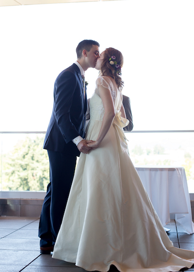

Welcome
We're married! Thank you so much for supporting us and attending our wedding. It was a truly unforgettable day. Feel free to contact us if you have any questions or comments.
About Us
We met in an entrepreneurship class in 2015. We quickly bonded over burgers, beach dates, hikes, and much more. After dating for almost three years, Jared popped the question on a ski trip to Timberline Lodge in beautiful Oregon. We are looking forward to spending our lives together (with our dog Zeus) and having many more mountain biking, hiking, skiing, stand-up-paddle boarding adventures.
Groomspeople
Ben Brook
Groomsperson
Met in middle school tennis lessons, continued to be roommates through college.
Julian Kosanovic
Groomsperson
First and only sibling. Musically gifted wizard.
Payne Kruskamp
Groomsperson
Began as locker neighbors in middle school, continued to be college roommates.
Zach Skalet
Groomsperson
Met through OSU cycling club. Go-to bike buddy!
Bridesmaids
Emily Carpenter
Maid of Honor
Best older sister ever. The most caring individual you will ever meet.
Nate Carpenter
Bromaid of Honor
Best younger brother ever. Really impressive guy.
Allison Horn
Bridesmaid
College-roomie and so much more. 10/10 recommend for a Red Robin date.
Shelby Patterson
Bridesmaid
Friends for almost 20 years. Will happily go on a run with you that turns into a four hour catch-up.
Our Wedding
Our wedding will be held at The Vue, Corvallis on the 17th of June, 2018.
The doors to The Vue will be open at 10:00 AM. The ceremony will begin at 10:30 AM,
followed by a brunch reception.
Enter the building on 2nd street and proceed to the 6th floor.
Ample free parking is available on the south side of the building.

Map
The address of The Vue is 517 SW 2nd Street Corvallis, OR 97330
Accommodations
Here are some options for spending the night in Corvallis. Please be aware our wedding is sharing the same weekend as Oregon State University's graduation ceremony. We recommend booking lodging as soon as possible.
Other Activities
Looking for something to do around Corvallis? Here are some recommendations.
Food
Outdoors
Marys Peak: The highest mountain in Oregon's coastal range. Lots of hiking or sightseeing available.
McDonald Research Forest: A forest owned by Oregon State University with many trails available for hiking or biking.
Finley Wildlife Refuge: Great for birdwatchers.
Corvallis Farmers' Market: Open Saturday 9AM-1PM at Corvallis's riverfront area.
Oregon Coast
Newport: The closest coastal town to Corvallis. Attractions include beaches, the aquarium, and the bayfront.
Yachats: Smaller coastal village with some great restaurants and views.
RSVP
Our wedding is over and we're happily married, so no need to RSVP. 😀

Registry

Contact Us
Abbey and Jared would love to hear from you. Please use this email to message either of us: contact@abbeyjaredwedding.com